Big Picture
The cover places digestion among the major human body systems and shows food as energy-producing, body-building, and body-regulating material. The rest of the lesson explains how food becomes small soluble molecules, how these molecules enter transport systems, and how the liver helps regulate and process them.
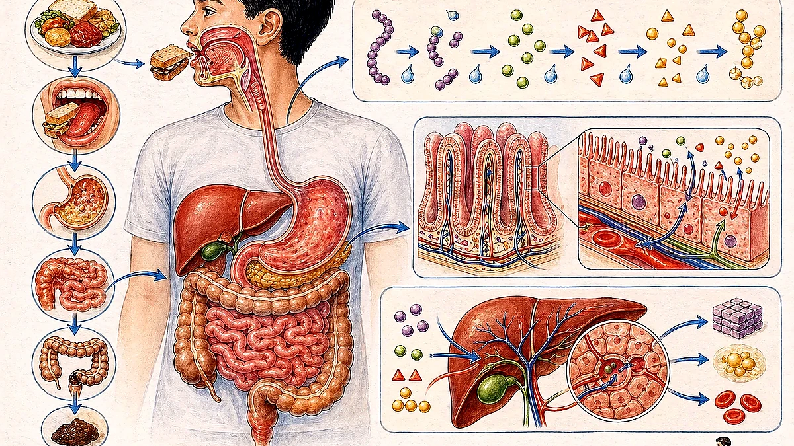
Digestive, skeletal, muscular, nervous, respiratory, circulatory, reproductive, lymphatic, urinary, endocrine, and integumentary.
Break large food molecules into soluble molecules small enough to be absorbed into blood or lymph.
The liver, gall bladder, and pancreas support digestion even though food does not pass through them.
The scan gives the liver a major role in nutrient processing, glucose control, protein metabolism, red blood cell breakdown, and detoxification.
What Is Nutrition?
Nutrition is the process by which organisms obtain food and energy for body growth, repair, and maintenance.

Food is taken into the body.
Large food molecules are broken down into smaller, soluble molecules that can be absorbed into body cells.
Digested food substances enter the bloodstream and are transported to cells.
Some absorbed food substances are converted into new protoplasm or used to provide energy.
Undigested material is eliminated from the body through the anus.
Key distinction: digestion is chemical and physical breakdown; absorption is movement into transport fluids; assimilation is use by cells.
Digestive Tract And Organs
Digestion takes place in the digestive tract, a continuous tube that starts at the mouth and ends at the anus. The scan also calls this the gut or alimentary canal, together with associated organs such as the liver, gall bladder, and pancreas.

Food enters, teeth chew, saliva moistens, and amylase begins starch digestion.
Connects the buccal cavity to the oesophagus and larynx; swallowing is guarded by the epiglottis.
Muscular tube that moves food to the stomach by peristalsis.
Distensible muscular bag that churns food and mixes it with gastric juice.
Duodenum, jejunum, and ileum; completes digestion and absorbs nutrients.
Absorbs remaining water and mineral salts, forming drier waste.
Rectum stores waste before elimination through the anus.
Produce, store, or release bile and digestive juices into the duodenum.
The Mouth And Buccal Cavity
Food enters through the mouth, or buccal cavity. Both physical and chemical digestion happen here.
Mouth Jobs
- Teeth break food into smaller pieces, making it easier to swallow.
- Chewing increases the surface area to volume ratio so enzymes can work more efficiently.
- Salivary glands secrete saliva, which moistens food and makes it easier to swallow.
- Saliva contains salivary amylase, which breaks starch into maltose.
- The optimum pH of salivary amylase is about 7.
- The tongue rolls food into a bolus, which is then swallowed.
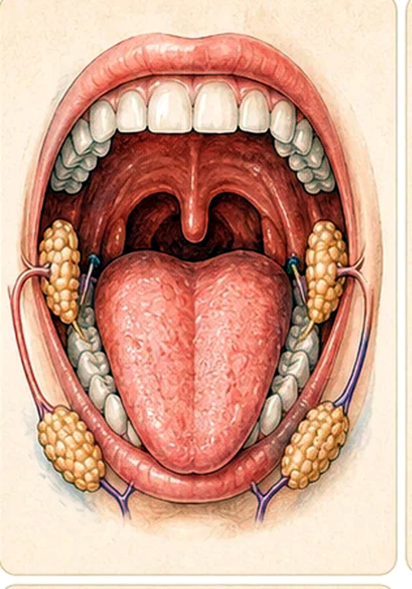
Dental Health
Children have 20 temporary teeth.
Adults usually have 32 permanent teeth.
Incisor, canine, premolar, and molar.
A tooth consists of enamel, dentine, cementum, and pulp tissue.
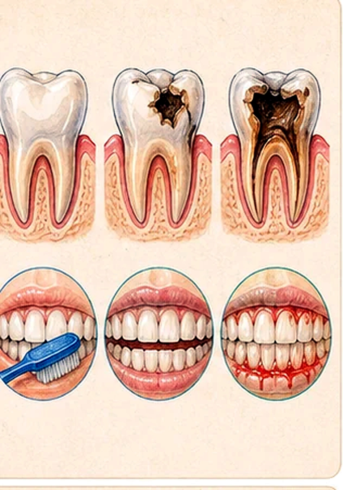
Pharynx, Epiglottis, And Oesophagus
The Pharynx
The pharynx is the part of the gut connecting the buccal cavity to the oesophagus and larynx. It also leads to the trachea. The larynx has a slit-like opening called the glottis.
During swallowing, the larynx moves up and the epiglottis moves downward so the larynx is covered. This prevents food particles from entering the trachea.
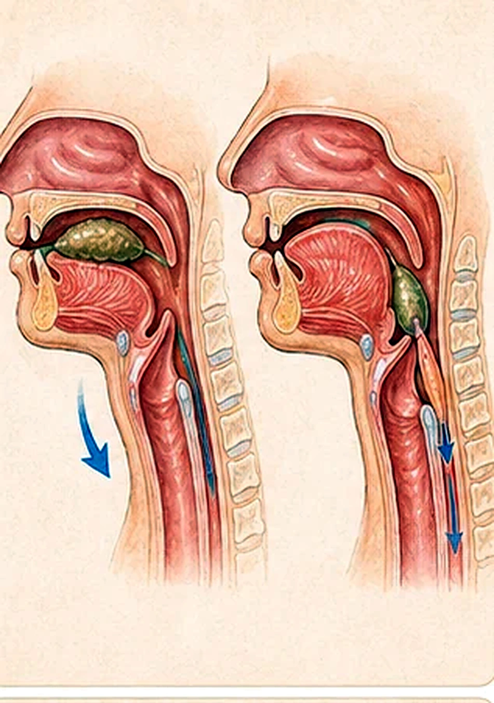
The Oesophagus
- Food passes through the pharynx and enters the oesophagus, a muscular tube leading to the stomach.
- The oesophagus has two layers of smooth muscle: an external longitudinal layer and an inner circular layer.
- These muscles contract and relax alternately to produce wave-like contractions called peristalsis.
- Food moves along the oesophagus due to peristalsis.
- Digestion of starch by salivary amylase continues in the oesophagus.
Correction for clarity: the scan sentence about food entering the trachea appears to be missing "not." The biological point is that the epiglottis helps stop food from entering the trachea.
Stomach, Liver, Gall Bladder, And Pancreas
The Stomach
The stomach is a distensible muscular bag.
- Deep pits in the stomach wall contain gastric glands.
- Gastric glands secrete mucus to protect the stomach wall and also secrete digestive juices.
- Peristalsis churns food, breaking it up and mixing it thoroughly with gastric juice.
- Food leaves the stomach in small quantities at regular intervals and enters the small intestine as chyme, a semi-liquid mass.
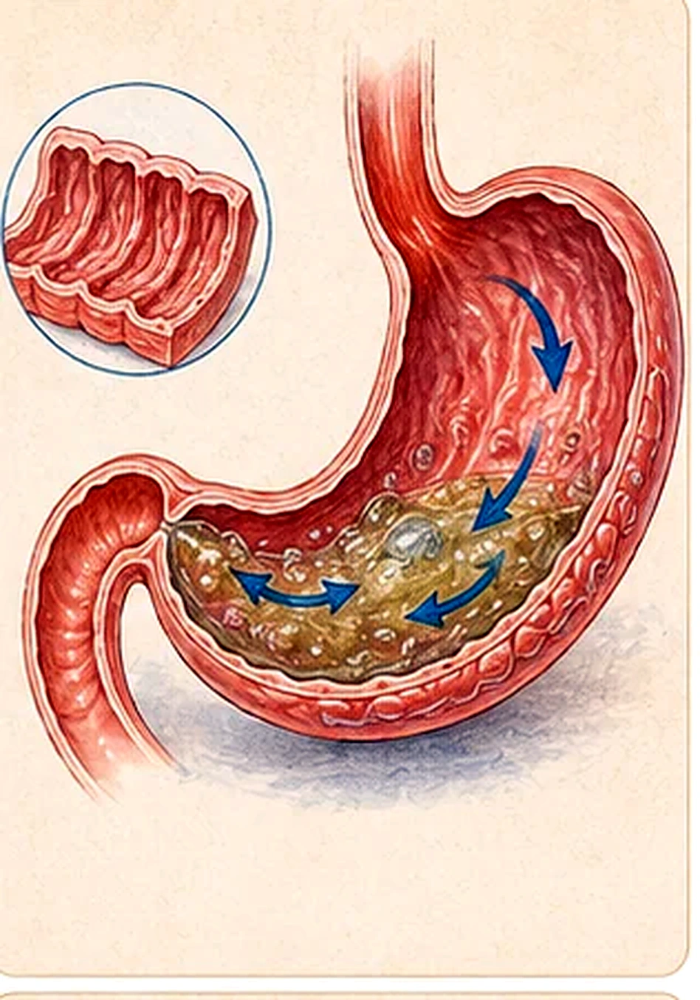
Liver, Gall Bladder, And Pancreas
Liver cells produce and secrete bile, an alkaline greenish-yellow liquid containing bile salts and bile pigments.
Bile pigments are waste products and are removed with the faeces.
Stores bile temporarily and releases it to the duodenum through the bile duct.
Emulsify large fat droplets into smaller droplets, increasing the surface area for lipase.
An alkaline solution containing trypsinogen, pancreatic amylase, and pancreatic lipase.
The pancreas also secretes insulin and glucagon.
The Small Intestine
The small intestine has three parts: the U-shaped duodenum, the jejunum, and the much-coiled ileum.
- Food is moved through the small intestine by peristalsis.
- Small portions entering the small intestine help food become completely digested by enzymes.
- In the duodenum, chyme mixes with digestive juices from the pancreas, liver, gall bladder, and intestinal glands.
- Intestinal juice contains intestinal lipase, enterokinase, erepsin, maltase, lactase, sucrase, and other enzymes.
- All enzymes in the small intestine have an optimum pH under alkaline conditions.
- The jejunum and ileum mainly absorb nutrients and water.
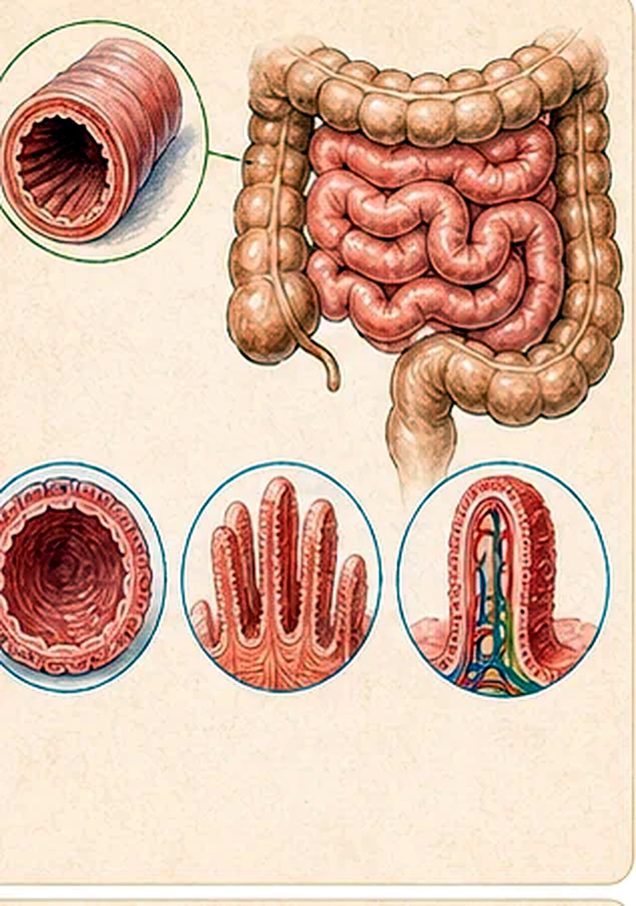
Digestion Enzymes
Food is completely digested in the small intestine. The scan lists the enzyme pathways for carbohydrate, fat, and protein digestion.
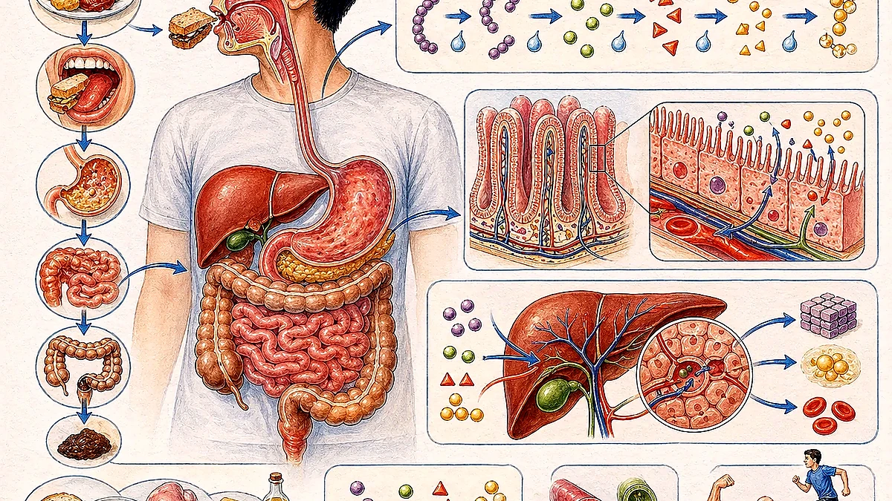
| Food molecule or precursor | Enzyme | Product | Where emphasized in the scan |
|---|---|---|---|
| Starch | Salivary amylase | Maltose | Mouth and oesophagus; optimum pH about 7. |
| Starch | Pancreatic amylase | Maltose, a disaccharide | Small intestine. |
| Maltose | Maltase | Two glucose molecules | Small intestine. |
| Sucrose | Sucrase | Glucose and fructose | Small intestine. |
| Lactose | Lactase | Glucose and galactose | Small intestine. |
| Fats | Lipase | Three fatty acids and glycerol | Small intestine; bile improves lipase action by emulsifying fats. |
| Trypsinogen | Enterokinase | Trypsin | Small intestine activation step. |
| Proteins | Trypsin | Polypeptides | Small intestine. |
| Polypeptides | Peptidases / erepsin | Amino acids | Small intestine. |
Quiz correction: the scan shows a circled option near C, but the scientifically correct answer is B: pancreatic amylase in the small intestine converts starch into disaccharides. Option C is wrong because sucrase acts in the small intestine, not the mouth.
Adaptations For Absorption
Nutrients are absorbed from the lumen of the small intestine into the body. The small intestine is adapted for this by greatly increasing surface area.
- The inner wall has large circular folds.
- The inner wall has finger-like projections called villi.
- Each epithelial cell on a villus has smaller projections called microvilli.
- These adaptations create a larger surface for absorption.
- Villi contain capillaries and a lacteal, allowing nutrients to enter blood or lymph.
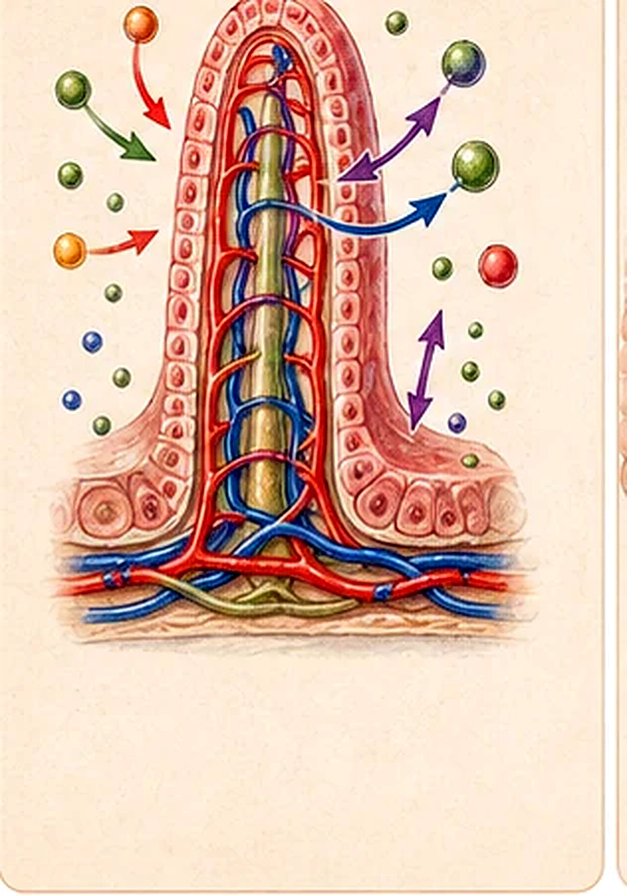
The Large Intestine
- The large intestine, or colon, is shaped like an inverted U.
- It absorbs remaining water and mineral salts not absorbed by the small intestine.
- Undigested waste moves along by peristalsis and becomes progressively drier.
- Undigested waste is mainly cellulose, which humans cannot digest.
- Waste is stored in the rectum before elimination through the anus; elimination of waste material is egestion.
Transport Of Products Of Digestion
As absorption takes place, blood in the villus capillaries becomes rich in simple sugars and amino acids. These capillaries converge into the hepatic portal vein, which leads to the liver.
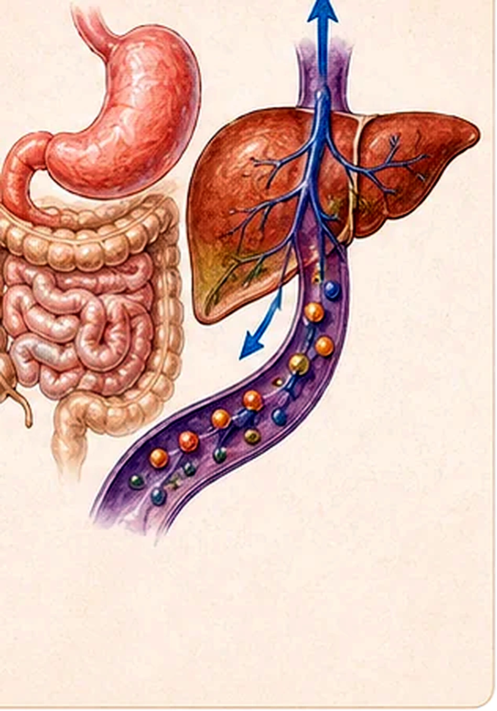
The Liver Roles
The scan spends several slides on the liver because it is more than a bile producer. It processes absorbed nutrients, stores or releases glucose, handles amino acid excess, breaks down old blood materials, and detoxifies substances.
Carbohydrate Metabolism
- The liver is involved in carbohydrate metabolism and regulation of blood glucose concentration.
- When blood glucose is high, islets of Langerhans in the pancreas secrete insulin.
- Insulin stimulates liver cells to convert glucose into glycogen, which is stored in the liver.
- When blood glucose is low, islets of Langerhans secrete glucagon.
- Glucagon stimulates liver cells to convert stored glycogen back into glucose and release it into the blood.
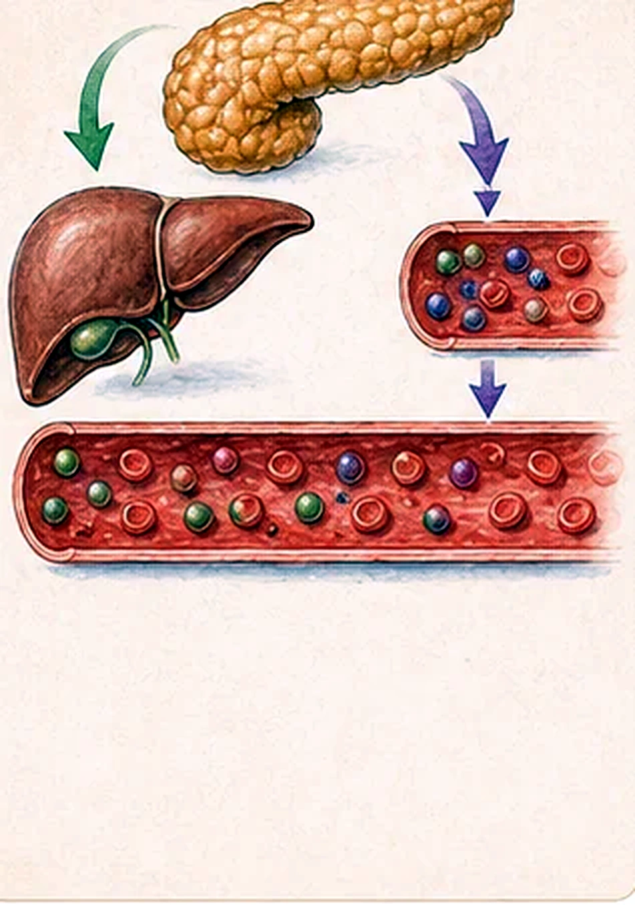
Fat And Protein Metabolism
The liver produces bile, an alkaline liquid that emulsifies fats.
The liver oxidises fats to produce energy.
Excess carbohydrates and proteins can be converted to fatty acids and glycerol, then exported and stored as fatty tissue.
The liver synthesizes plasma proteins such as albumin and clotting factors such as fibrinogen.
The liver removes the amino group, -NH2, from excess amino acids.
Ammonia is toxic to cells, so the liver converts nitrogen waste to urea, which is excreted in urine.
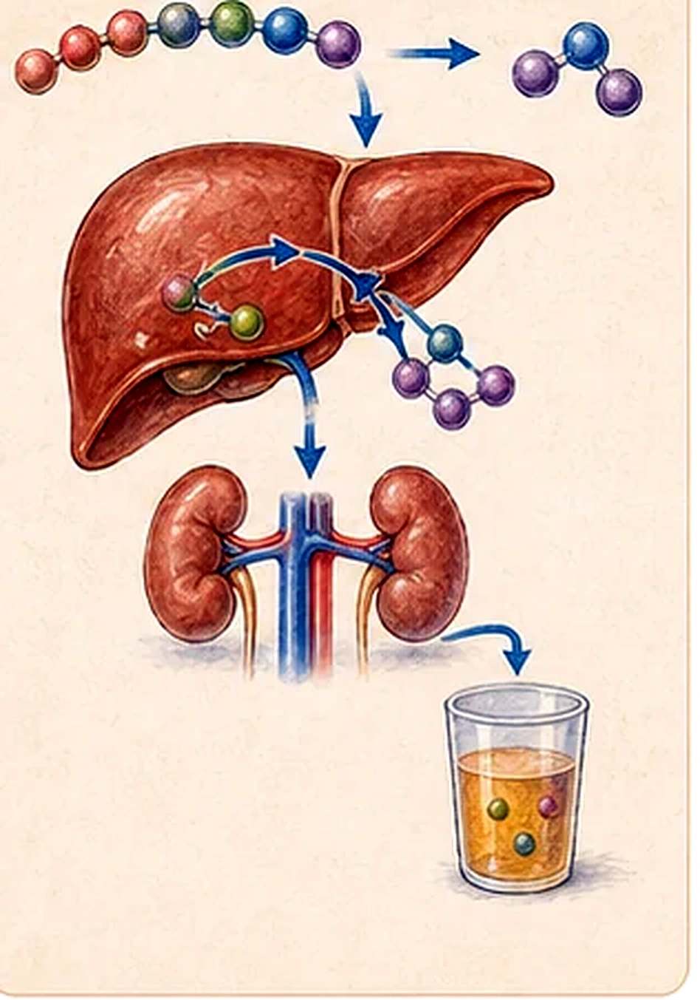
Breakdown Of Red Blood Cells
- Aging red blood cells are removed by the spleen.
- Haemoglobin from red blood cells is brought to the liver and broken down.
- Iron from haemoglobin is stored in the liver for reuse.
- Other metabolic by-products form bile pigments.
Amino acids, iron, folic acid, and vitamin B12 support erythropoiesis in red bone marrow. Erythrocytes circulate for about 120 days, then expired cells break up in the liver and spleen.
Detoxification
The liver breaks down toxic substances for excretion in urine or bile. The scan uses alcohol as an example.
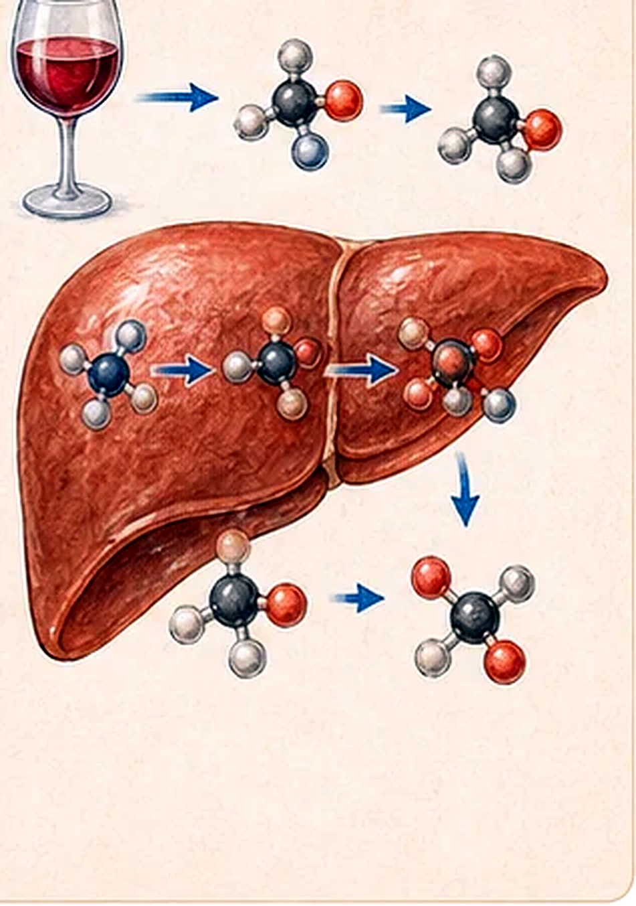
Wrap Up
The source closes with three review prompts.
Printed Video And Activity Prompts
- Experiment: Simulate a digestion process.
- How Did Teeth Evolve?
https://www.youtube.com/watch?v=wrpEjEqURJg - Operation Ouch - The Epiglottis.
https://www.youtube.com/watch?v=sLECPLLYafA - Observation: Recognise parts of an animal digestive system.
- How Your Digestive System Works.
https://www.youtube.com/watch?v=Og5xAdC8EUI
Rebuilt from the Week 09 scanned PDF, IMG_20260427_0009.pdf. The final two scan frames contained unrelated handwritten login/game notes rather than digestive-system lesson content, so they were not reproduced in this public study page.